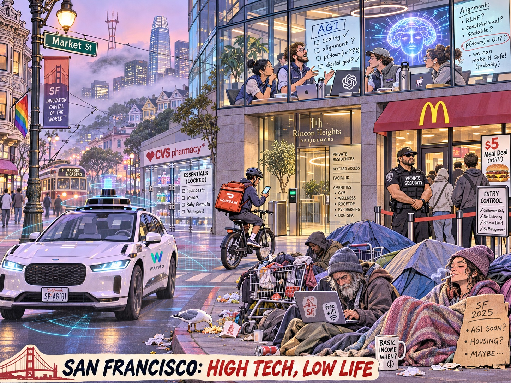

Stand near Market Street in San Francisco at dusk, and the future arrives without a sound. A sleek, white Jaguar I-PACE glides through the intersection with no one behind the wheel. Its roof-mounted LiDAR sensors spin frantically, painting the surrounding streetscape in millions of invisible laser points and calculating trajectories through a dense neural network.
Just ten feet away, trash blows across the concrete where unhoused residents are slumped over on the sidewalk in the shadow of luxury high-rises. Across the street, a private security guard in a tactical vest stands watch outside the doors of a Carl's Jr., regulating access to fast food. Meanwhile, a few blocks away inside air-conditioned, badge-restricted offices, an aristocrat class of twenty-something engineers making seven-figure salaries is earnestly attempting to build Artificial General Intelligence—a literal machine god.

The Aesthetic: Neon vs. Patagonia
Thanks to visual masterpieces like Blade Runner, Akira, and Cyberpunk 2077, pop culture has reduced cyberpunk to a visual mood board. We expect endless night, torrential acid rain, Japanese kanji glowing in hot pink and cyan, and a brooding anti-hero smoking a synthetic cigarette.
San Francisco, by contrast, is brightly lit, perpetually blanketed in soft coastal fog, and architecturally defined by pastel Painted Ladies and glass-and-steel office parks. Its ruling class doesn’t wear high-collared cyber-trench coats; they wear Patagonia fleece vests, Allbirds, and Apple Watches.
Because the city looks more like a sprawling corporate campus collided with a 19th-century Gold Rush town, people miss what is happening beneath the surface. Strip away the neon veneer of the genre, and you find the foundational definition coined by sci-fi writer Bruce Sterling in the 1980s: "High tech, low life."
Cyberpunk was never about how cool the lights looked. It was a sociological warning about what happens when exponential technological advancement occurs alongside the total collapse of the social safety net. It is about the friction between god-like technological power and raw, unmitigated human despair. By that metric, San Francisco isn't just cyberpunk—it is the capital of it.
The Aristocracy and the Machine God
In William Gibson’s seminal 1984 novel Neuromancer—the book that birthed the cyberpunk canon—the plot revolves around the Tessier-Ashpool clan. They are an ultra-wealthy, insulated dynasty of techno-aristocrats living in a high-tech enclave, obsessed with immortality and attempting to merge powerful artificial intelligences into a transcendent digital entity.
Look at the Bay Area today. We have an insular tech aristocracy pouring millions of dollars into longevity biotech, blood-plasma transfusions, and defeating aging. More strikingly, the dominant industry in the city is no longer SaaS apps or social media; it is the race to build AGI—autonomous systems designed to eclipse human cognition altogether.
Walk into a coffee shop in Hayes Valley or the Mission, and you will overhear casual conversations about "compute clusters," "alignment," and "p(doom)"—the statistical probability that the technology they are building at work that day will literally annihilate the human race. In cyberpunk literature, the hubris of an elite class playing god with artificial consciousness is the central engine of the plot. In San Francisco, it’s just Tuesday before stand-up.
High Tech, Low Life in Real Time
The true surrealism of San Francisco lies in its visceral, everyday juxtapositions. It is a city where the far future and civic decay aren't just coexisting; they are violently rubbing shoulders on the same city block:
- Autonomous Indifference: Fleets of driverless Waymo taxis navigate seamlessly past sprawling sidewalk tent encampments in SoMa and the Tenderloin. When a pedestrian in the middle of a mental health crisis wanders into the crosswalk, the car’s AI registers the human form strictly as a spatial obstacle, recalculates its route in milliseconds, and continues taking its passenger to a $300-a-plate omakase dinner.
- Fortress Retail: You can walk into an upscale grocer and pay using a tap of a titanium smartwatch, yet the pharmacy down the block locks its toothpaste, deodorant, and frozen food behind thick sheets of plexiglass and steel chains, requiring an employee with a physical key just to buy basic necessities.
- Algorithmic Feudalism: An entire underclass of gig-economy couriers on electric bikes navigates the city via algorithmic directives and countdown timers on their smartphones, dropping off artisanal burritos in the lobbies of biometric-access apartment towers without ever making eye contact with the residents upstairs.
- Private vs. Public: As public infrastructure strains, the wealthy simply opt out. Private luxury buses with tinted windows and Wi-Fi ferry workers down the peninsula, bypassing public transit. Private security forces patrol wealthy neighborhoods, while networks of automated license-plate readers and predictive cameras monitor the streets.
This is the exact privatization and fragmentation of public life that Neal Stephenson parodied in Snow Crash and that Mike Pondsmith built into the lore of the Cyberpunk tabletop games. Yet this convergence of dystopian fiction and Bay Area reality is no mere coincidence—the writers who invented the genre were looking right at these very streets.
Coming Home to the Source Material
Perhaps the greatest irony is that the pioneers of the genre literally used the Bay Area as their blueprint.
Philip K. Dick’s 1968 novel Do Androids Dream of Electric Sheep? (the basis for Blade Runner) isn't set in Los Angeles—it is set in a decaying, fog-choked, post-apocalyptic San Francisco where the wealthy obsess over artificial life while the forgotten classes rot in abandoned, trash-filled apartment buildings.
Even more prescient is William Gibson’s 1993 novel Virtual Light (the first of his Bridge Trilogy). In it, Gibson envisioned a near-future San Francisco hollowed out by an evaporated middle class, torn between ultra-rich technocrats and a massive population of unhoused people who take over the Bay Bridge, turning it into a sprawling, self-governed shantytown of tents and salvaged tech. Thirty years ago, it was speculative fiction; today, it reads like local journalism.
The Warning We Mistook for a Vibe
We wanted cyberpunk to be cool. We wanted the cybernetic implants that let us jump across rooftops, the moody synthwave soundtracks, and the cinematic grit of a world where everyone looks like a rockstar hacker.
Instead, we got the real version. We got the mundane, bureaucratic, fleece-vested reality of late-stage techno-capitalism. We got a city where humanity's most funded minds are summoning digital gods in the cloud, while on the ground below, basic necessities sit behind padlocked plexiglass and people sleep upright on the concrete.
San Francisco is as cyberpunk as it gets. It just turns out that living in a cyberpunk novel is a lot less glamorous than reading one.
Comments